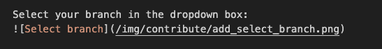
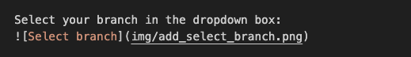
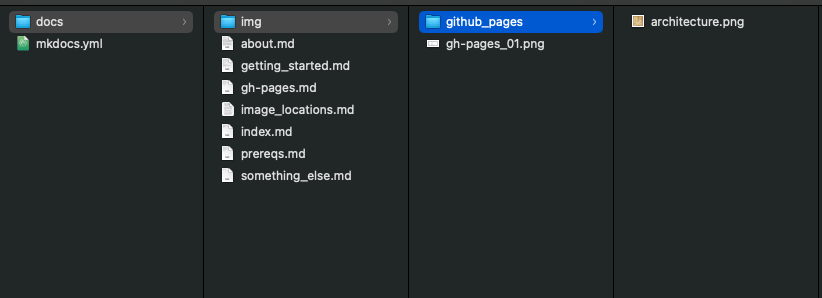
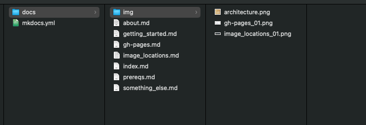
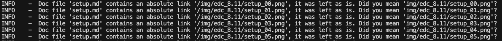
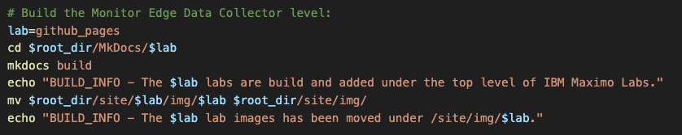
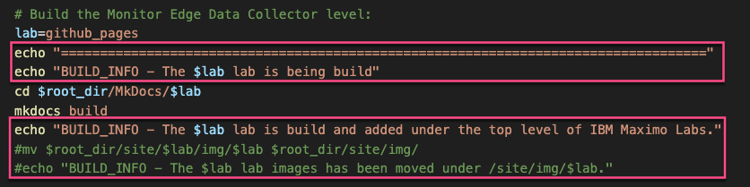

Objectives
Image locations and references to the images has to change:
- Image location of lab images
- Edit build_all_mkdocs.sh
1. Image location of lab images
Previously it was needed to use absolute links to images which also had to include the name of the lab, e.g.: 
this needs to be changed to a relative link, as github pages add a first level in the URL being the name of the Github repository.
Because of that the images needs to be located under the lab, e.g.:

This also means that the image files must be in the labs img folder without an additional folder that needs to have the same name as the lab.
Meaning this structure:

has to change to this structure: 
It also means, that the following kind of messages during the build should dissapper: 
2. Edit build_all_mkdocs.sh
Once the image locations have changed (in the folder structure and in the links in the md files) then we need to change the build script from: 
by removing the last two lines per lab, hence do not copy images to a central (but unavailable for github pages) location:  While we are there also change/add the ecco strings to easier see what is happening during debug of building the whole site.